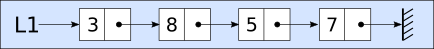
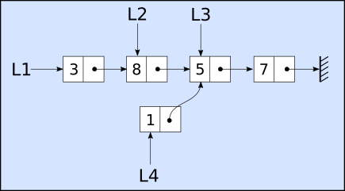

Structure de données linéaire#
Exercice#
Cet exercice traite des listes chainées qui seront construites avec le module liste-chaine.py
On définit l’interface d’une liste chainée.
la méthode tete() renvoie la tête de la liste, c’est à dire la valeur de la première cellule de la chaine;
la méthode queue() renvoie la queue de liste, c’est à dire la liste sur laquelle pointe la première cellule;
la méthode est_vide() renvoie un booléen indiquant si la liste est vide ou non.
la méthode insere_en_tete() qui prend en argument une valeur l’ajoute en début de liste ;
On considère la liste chainée suivante:

Que renvoie les instructions suivantes:
L1.tete():L1.queue():L1.queue().queue():L1.queue().queue().queue().est_vide()
Donner une suite d’instructions qui permet de construire la liste chainée L1.
On souhaite créer les listes L2, L3 et L4 représentées ci-dessous. Quelles sont les instructions Python qui permettent de créer ces listes ?

Écrire la fonction nombre_elements qui prend en argument une liste chainée et renvoie le nombre de ces éléments.
La fonction insere_en_position prend en argument une liste chainée, une position et une valeur à insérer dans la liste chainée. Cette fonction renvoie la liste chainée avec le nouvel élément situé à la bonne position.
Écrire cette fonction en Python.
Insérer le nombre 0 en position 2.
Insérer le nombre -1 en fin de liste.
Exercice#
Exercice sur les piles qui utilisera le script pile.py
L’interface de la pile utilise les fonctions et méthodes suivantes :
Créer une pile vide :
P=creer_pile()Empiler une valeur au sommet de la pile :
P.empiler(x);Dépiler le sommet de la pile en renvoyant sa valeur
y=P.depiler();Tester si la pile est vide :
P.est_vide().
Créer une pile vide P.
Empiler dans la pile P un nombre aléatoire de valeurs (entre 5 et 10) choisies aléatoirement entre 1 et 20 (1 et 20 compris).
Écrire la fonction somme qui prend en argument une pile et calcule la somme des nombres contenus dans la pile P. Celle-ci sera vide à la fin du calcul.
Écrire la fonction somme2 identique à somme mais la pile P devra retrouver son état initial. Pour cette seconde fonction, on utilisera une seconde pile interne à la fonction.
Exercice#
Cet exercice a pour objectif d’interfacer des piles avec les listes de Python
On souhaite créer l’interface d’une pile en utilisant les listes python. L’interface est la suivante:
Créer une pile vide :
P=creer_pile()Empiler une valeur au sommet de la pile :
empiler(P,x);Dépiler le sommet de la pile en renvoyant sa valeur
y=depiler(P);Tester si la pile est vide :
est_vide(P).
Citer les méthodes ou fonctions sur les listes qui permettent :
de créer une pile;
d’empiler une valeur;
de dépiler le sommet de la pile;
de tester si la pile est vide.
Créer ces 4 fonctions creer_pile, empiler, depiler et est_vide pour réaliser l’interface de la pile. Les paramètres de ces fonctions vérifient l’interface donnée ci-dessus.
Pour vérifier le bon fonctionnement de votre interface, les instructions de contrôle suivantes ne doivent pas renvoyer d’erreur:
P=creer_pile()
assert est_vide(P) == True
assert empiler(P,5) == [5]
assert empiler(P,3) == [5, 3]
assert empiler(P,8) == [5, 3, 8]
assert est_vide(P) == False
assert depiler(P) == 8
assert depiler(P) == 3
assert est_vide(P) == False
assert depiler(P) == 5
assert est_vide(P) == True
Exercice#
Cet exercice sur les files utilise le script file.py qui implémente l’interface des files.
On rappelle l’interface de la file:
Créer_file() qui crée une file vide :
F = creer_file()Enfiler(valeur) qui ajoute une valeur à la file :
F.enfiler(1)Défiler() qui supprime la tête de la file en renvoyant sa valeur :
F.defiler()Est_vide() qui teste si la file est vide :
F.est_vide()qui renvoie vrai ici.
Créer une file vide F.
Enfiler un nombre aléatoire de valeurs (entre 5 et 10) dans la file F. Les valeurs sont des nombres aléatoires compris entre 1 et 100.
Créer une seconde file G vide.
Créer un script qui enfile les nombres impairs de la file F dans la file G. La file F contiendra les nombres pairs à l’issue du script.
Exercice#
Exercice sur les files qui utilise le script file.py et traite la conjecture de syracuse
La Conjecture de syracuse appelée suite de Syracuse calcule une suite de nombres selon leur parité (pair ou impair). On utilisera une file pour stocker les valeurs de nos différentes suites de Syracuse. L’interface de notre file est la même que l’exercice précédent.
Après avoir lu l’article sur wikipédia, nous allons construire différentes fonctions en Python pour calculer les nombres de cette suite.
Importer la classe File et la fonction creer_file du module file.
Créer une file vide S qui stockera les nombres de notre suite de Syracuse.
Écrire la fonction syracuse de paramètre n, nombre entier, qui calcule les nombres de la suite de syracuse et enregistre les valeurs dans la file S.
On associe les nombres de syracuse à la trajectoire d’une feuille morte et on parle du vol de la suite. Trois valeurs symbolisent ce vol : le temps de vol, le temps de vol en altitude et l’altitude maximale. Écrire trois fonctions qui permettent d’obtenir ces trois valeurs. Attention, la file doit retrouver son état initial après les appels des fonctions.
Créer un script qui permet de calculer les nombres de syracuse pour une valeur N donnée et affiche les trois valeurs du vol.
Par exemple, pour N=129:
Le temps de vol pour N=129 est 121.
Le temps de vol en altitude pour N=129 est 2.
L’altitude maximale pour N=129 est 9232.
Représenter graphiquement les nombres de syracuse en important le module matplotlib et en utilisant la fonction graphik ci-dessous:
# import du module avec alias plt
from matplotlib import pyplot as plt
# fonction qui permet de représenter graphiquement ces nombres:
def graphik(file):
if not file.est_vide():
y = file.defiler()
file.enfiler(y)
n=1
Y=[y]
while y != 1:
y = file.defiler()
Y.append(y)
n += 1
file.enfiler(y)
file.enfiler(y)
X=[i for i in range(n)]
plt.plot(X,Y)
return plt
#Appel pour afficher le graphique, on effectuera l'appel:
g=graphik(S)
g.show() # <= inutile sur un notebook jupyter !
Solutions des exercices#
Exercice 1#
[24]:
from liste_chaine import Liste, Maillon, creer_liste_chaine
L1=creer_liste_chaine()
L1.inserer(7)
L1.inserer(5)
L1.inserer(8)
L1.inserer(3)
# créer les listes L2, L3 et L4:
print(L1)
L2=L1.queue()
print(L2)
L3=L2.queue()
print(L3)
L4=L2.queue()
L4.inserer(1)
print(L4,L3)
[3]->[8]->[5]->[7]->[]
[8]->[5]->[7]->[]
[5]->[7]->[]
[1]->[5]->[7]->[] [5]->[7]->[]
[25]:
def nombre_element(liste):
nb = 0
while not liste.est_vide():
liste=liste.queue()
nb += 1
return nb
# version récursive de la fonction nombre_element
def nb_element_rec(liste):
if liste.est_vide():
return 0
else:
return nb_element_rec(liste.queue())+1
def insere_en_position(liste,pos,element):
debut=creer_liste_chaine()
while pos > 0:
# on recupère les valeurs de la liste dans une liste debut
debut.inserer(liste.tete())
# on avance dans la liste tant que pos > 0
liste=liste.queue()
pos -= 1
# on insere l'élément dans la liste
liste.inserer(element)
# on remet les éléments de tête dans la liste
while not debut.est_vide():
liste.inserer(debut.tete())
debut=debut.queue()
return liste
print(nombre_element(L1))
#print(nb_element_rec(L1))
print(L1)
L1=insere_en_position(L1,2,6)
L1=insere_en_position(L1,4,1)
#print(nombre_element(L1))
print(nb_element_rec(L1))
print(L1)
4
[3]->[8]->[5]->[7]->[]
6
[3]->[8]->[6]->[5]->[1]->[7]->[]
Exercice 2#
[15]:
from pile import Pile, creer_pile
from random import randint
# 1. Créer la pile P vide
P=creer_pile()
# Empiler 5 valeurs entre 1 et 6
for _ in range(randint(5,10)):
P.empiler(randint(1,20))
def somme(pile):
S = 0
while not pile.est_vide():
S += pile.depiler()
return S
def somme_rec(pile):
if pile.est_vide():
return 0
else:
return pile.depiler()+somme_rec(pile)
def somme2(pile):
"""
Remarque : on peut se passer de l'argument pile et directement traiter la pile P dans la fonction.
"""
Q = creer_pile()
S = 0
while not pile.est_vide():
x = pile.depiler()
S += x
Q.empiler(x)
while not Q.est_vide():
pile.empiler(Q.depiler())
return S
print(P)
print("Somme des éléments de la pile:",somme2(P))
print("Somme des éléments de la pile:",somme_rec(P))
... ] 2 ] 5 ] 3 ] 16 ] 9 ] 20 ]
Somme des éléments de la pile: 55
Somme des éléments de la pile: 55
Exercice 3#
[16]:
# Fonctions et méthodes des listes
# pour créer une pile vide : list() ou []
# pour empiler une valeur : append(valeur)
# pour dépiler : pop(-1)
# pour tester la pile vide : pile == []
[17]:
def creer_pile():
return list()
def empiler(pile,valeur):
if valeur:
pile.append(valeur)
return pile
def depiler(pile):
return pile.pop(-1)
def est_vide(pile):
return pile == []
[18]:
P=creer_pile()
assert est_vide(P) == True
assert empiler(P,5) == [5]
assert empiler(P,3) == [5, 3]
assert empiler(P,8) == [5, 3, 8]
assert est_vide(P) == False
assert depiler(P) == 8
assert depiler(P) == 3
assert est_vide(P) == False
assert depiler(P) == 5
assert est_vide(P) == True
Exercice 4#
[10]:
from file import File, creer_file
from random import randint
F = creer_file()
for _ in range(randint(5,10)):
F.enfiler(randint(1,100))
print(F)
G = creer_file()
H = creer_file()
while not F.est_vide():
x=F.defiler()
if x % 2 == 1:
G.enfiler(x)
else:
H.enfiler(x)
while not H.est_vide():
F.enfiler(H.defiler())
print(F)
print(G)
6 < 28 < 83 < 38 < 86 < 20 < 83 < ...
6 < 28 < 38 < 86 < 20 < ...
83 < 83 < ...
Exercice 5#
[11]:
from file import File, creer_file
from matplotlib import pyplot as plt
S=creer_file()
def syracuse(n):
S.enfiler(n)
while n != 1:
if n % 2 == 0:
n = n // 2
S.enfiler(n)
else:
n = 3*n + 1
S.enfiler(n)
def temps_de_vol(file):
tdv = 0
x = file.defiler()
while x != 1:
file.enfiler(x)
tdv += 1
x = file.defiler()
file.enfiler(x)
return tdv
def temps_de_vol_altitude(file):
tdva = 0
n = file.defiler()
file.enfiler(n)
x = file.defiler()
while x > n:
tdva += 1
file.enfiler(x)
x = file.defiler()
while x != 1:
file.enfiler(x)
x = file.defiler()
file.enfiler(x)
return tdva
def altitude_maximale(file):
h = file.defiler()
file.enfiler(h)
x = file.defiler()
while x != 1:
if x > h:
h = x
file.enfiler(x)
x = file.defiler()
file.enfiler(x)
return h
def graphik(file):
if not file.est_vide():
y = file.defiler()
file.enfiler(y)
n=1
Y=[y]
while y != 1:
y = file.defiler()
Y.append(y)
n += 1
file.enfiler(y)
file.enfiler(y)
X=[i for i in range(n)]
plt.plot(X,Y)
return plt
N=27
syracuse(N)
print(S)
print("Le temps de vol pour N=%s est %s." % (N,temps_de_vol(S)))
print("Le temps de vol en altitude pour N=%s est %s." % (N,temps_de_vol_altitude(S)))
print("L'altitude maximale pour N=%s est %s." % (N,altitude_maximale(S)))
g=graphik(S)
#g.show()
27 < 82 < 41 < 124 < 62 < 31 < 94 < 47 < 142 < 71 < 214 < 107 < 322 < 161 < 484 < 242 < 121 < 364 < 182 < 91 < 274 < 137 < 412 < 206 < 103 < 310 < 155 < 466 < 233 < 700 < 350 < 175 < 526 < 263 < 790 < 395 < 1186 < 593 < 1780 < 890 < 445 < 1336 < 668 < 334 < 167 < 502 < 251 < 754 < 377 < 1132 < 566 < 283 < 850 < 425 < 1276 < 638 < 319 < 958 < 479 < 1438 < 719 < 2158 < 1079 < 3238 < 1619 < 4858 < 2429 < 7288 < 3644 < 1822 < 911 < 2734 < 1367 < 4102 < 2051 < 6154 < 3077 < 9232 < 4616 < 2308 < 1154 < 577 < 1732 < 866 < 433 < 1300 < 650 < 325 < 976 < 488 < 244 < 122 < 61 < 184 < 92 < 46 < 23 < 70 < 35 < 106 < 53 < 160 < 80 < 40 < 20 < 10 < 5 < 16 < 8 < 4 < 2 < 1 < ...
Le temps de vol pour N=27 est 111.
Le temps de vol en altitude pour N=27 est 95.
L'altitude maximale pour N=27 est 9232.
[ ]: